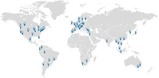

1. Merljivi rezultati: zberemo lahko rezultate o tem, ali se ljudje odzovejo na oglase na socialnih omrežjih, kolikokrat so oglase že videli, merimo lahko tudi mesečno število obiskovalcev spletne strani, koliko časa ljudje porabijo na spletni strani, katere strani so si ogledali in podobno.
2. Globalni doseg: oglašujemo lahko v kateri koli državi želimo, s tem pa povečamo prepoznavnost podjetja in privabljamo nove stranke.

3. Oglaševanje primernim ljudem: spletno oglaševanje nam omogoča, da oglašujemo le ljudem, za katere menimo, da so zainteresirani za izdelek.
4. Ugodna vrsta oglaševanja: veliko cenejša vrsta oglaševanja kot ostale.
5. Personalizirani oglasi: s takimi oglasi se lahko prilagodimo določeni skupini ljudi, to je tudi ključ do potrošnikovega uma in si tako zapomni podjetje, tako pa še dodatno povečamo možnosti, da bodo ljudje, kaj kupili.
6. Možnost A/B testiranja: spletne oglase lahko testiramo, da dosežemo večjo učinkovitost. Z opcijo A in B dobimo odgovor na vprašanja, kot so, katera slika privabi več ljudi, katero besedilo bi bilo bolj primerno in podobno.
 OGLASI IN DRUŽBENA OMREŽJA
OGLASI IN DRUŽBENA OMREŽJA